Fabri Fibra
Bio
Fratello maggiore del cantautore Nesli, Fabri Fibra esordisce nell'ambiente dell'hip hop underground a metà degli anni novanta con il nome Fabbri Fil, facendo parte per diversi anni degli Uomini di Mare e dei gruppi derivati da questi ultimi: i Qustodi del tempo e il collettivo Teste Mobili.
Debutta come solista con il nome d'arte di Fabri Fibra nel 2002 con l'album Turbe giovanili. Significativo per la svolta della sua carriera è invece l'album Mr. Simpatia, pubblicato nel 2004, con cui lascia il suo marchio indelebile nella scena musicale di allora e con cui spiana il terreno al contratto, nel 2006, con la major discografica Universal, con la quale pubblica nello stesso anno l'album Tradimento, il passo decisivo verso la notorietà di critica e di pubblico.
Nella sua carriera ha venduto oltre 1 milione di copie certificate dei suoi dischi.
Album
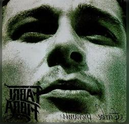 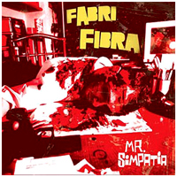 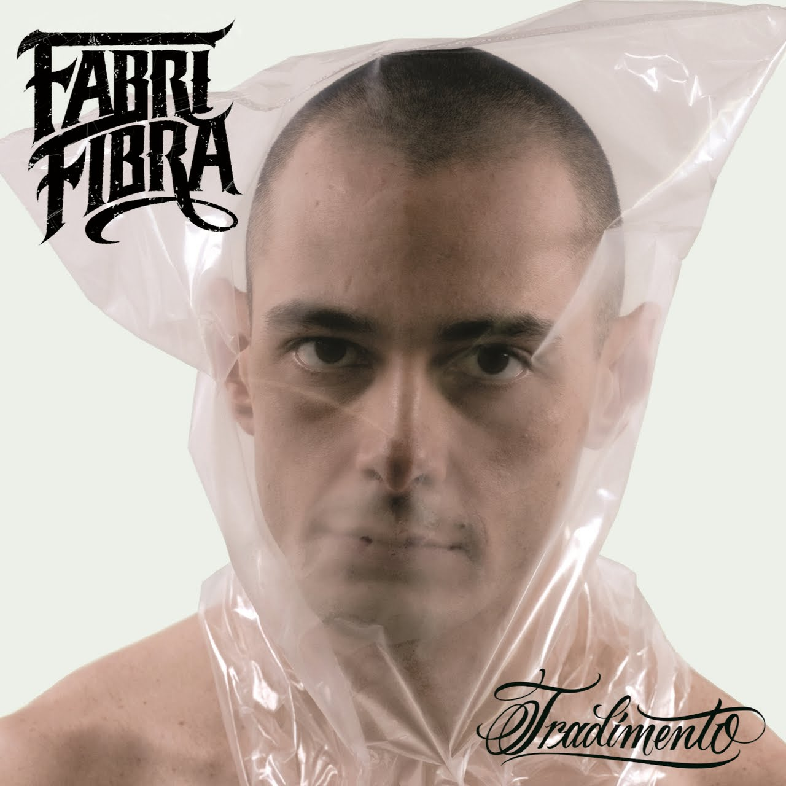 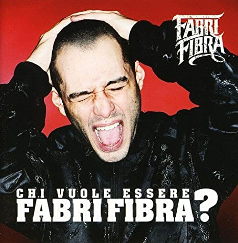 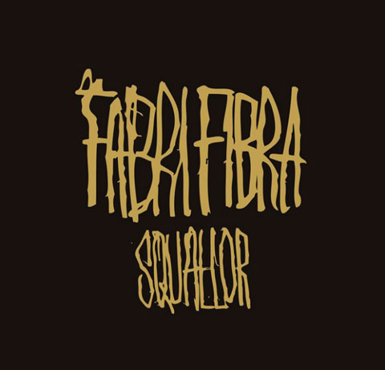 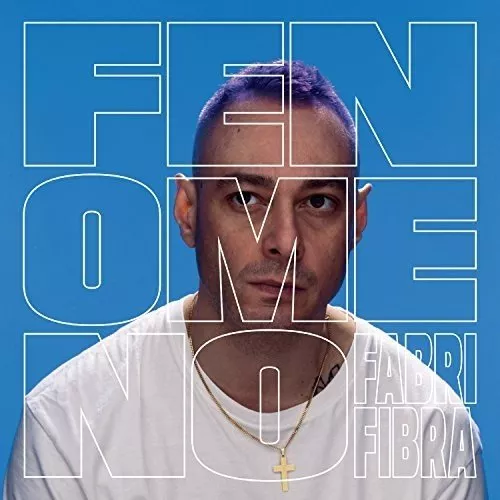 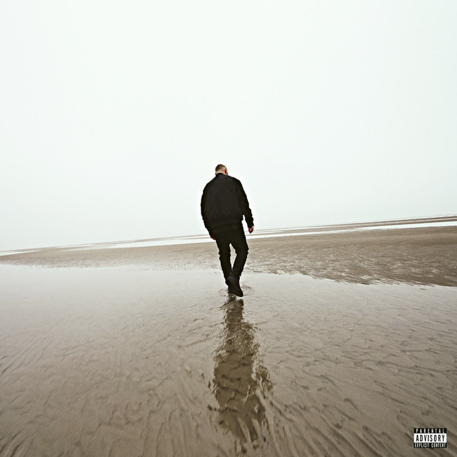Claver Gold
Bio
Fratello maggiore del cantautore Nesli, Fabri Fibra esordisce nell'ambiente dell'hip hop underground a metà degli anni novanta con il nome Fabbri Fil, facendo parte per diversi anni degli Uomini di Mare e dei gruppi derivati da questi ultimi: i Qustodi del tempo e il collettivo Teste Mobili.
Debutta come solista con il nome d'arte di Fabri Fibra nel 2002 con l'album Turbe giovanili. Significativo per la svolta della sua carriera è invece l'album Mr. Simpatia, pubblicato nel 2004, con cui lascia il suo marchio indelebile nella scena musicale di allora e con cui spiana il terreno al contratto, nel 2006, con la major discografica Universal, con la quale pubblica nello stesso anno l'album Tradimento, il passo decisivo verso la notorietà di critica e di pubblico.
Nella sua carriera ha venduto oltre 1 milione di copie certificate dei suoi dischi.
Album
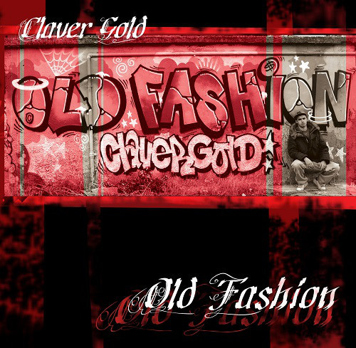 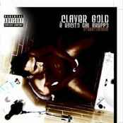 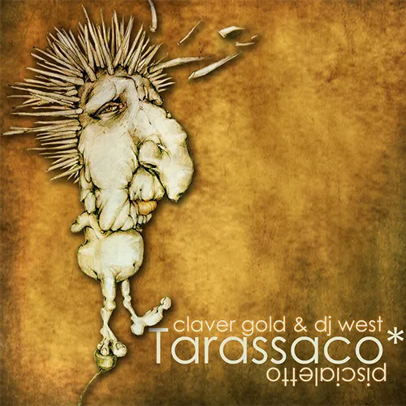 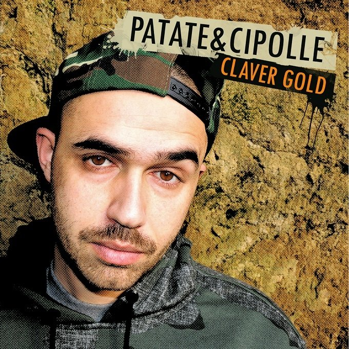 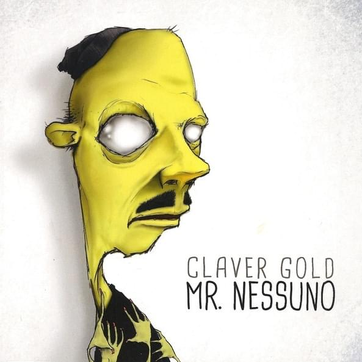 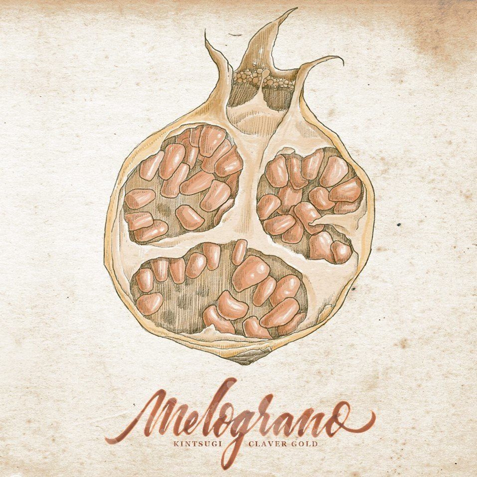 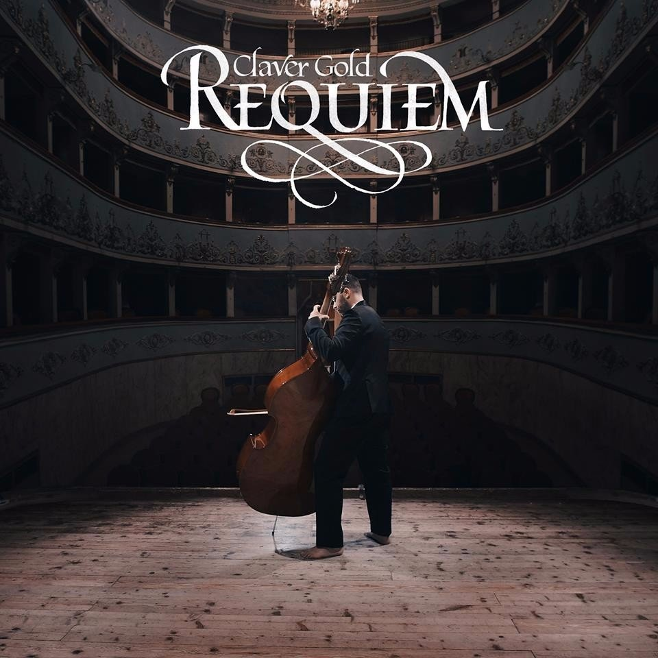